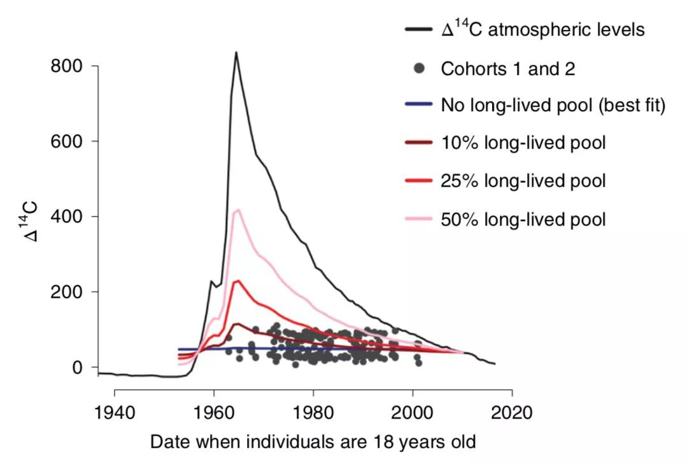
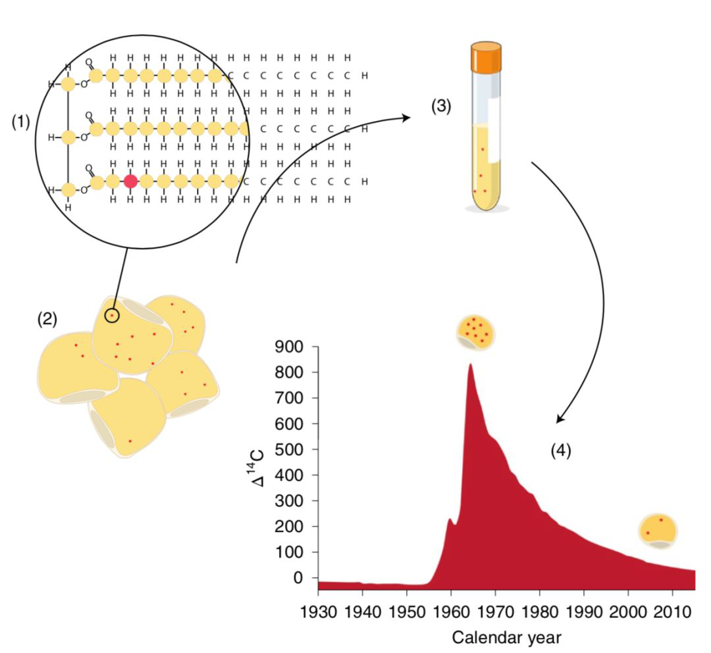

人到中年，非常可怜。 工作和生活上的事情就不说了，今天我们单说这个体重。 对于很多中年人而言，与年轻时相比，每天吃的东西其实也没多多少，甚至运动量也没怎么减少，还是一不小心就胖了，读大学时穿的裤子，再也穿不上了。
这究竟是为啥呢？
我们可以怪久坐、压力大、熬夜、饮食不规律等等。不过，来自世界顶尖医学院——卡罗林斯卡医学院——的最新研究成果，可能要给我最后一击了。
中年人，你们是真的老了。
Kirsty Spalding 领导的研究团队，经过长达 16 年的人体研究发现：随着年龄的增长，脂肪细胞脂质周转能力，尤其是脂质的消耗速度，大幅降低。
也就是说，随着年龄的增长，人体消耗脂肪的速度变慢了，如果你还保持年轻那个饭量，虽然进的量没有变，但是出的变少了，最终的结果就只有一个：变成老胖子。
而且研究人员还对 54 名志愿者做了长期随访，平均随访时间长达 13 年，结果发现，那些随着年龄的增长不减少热量摄入的人，平均体重增加 20%。就算你 100 斤，那也得喜添 20 斤肥肉。如果时间更长的话，还不知道你得胖成啥样。
Spalding 团队的这项研究成果发表在著名期刊《自然·医学》上，Peter Arner 是第一作者和共同通讯作者。 肥胖的问题恐怕不用我在这里多说了吧。
我们都知道，人体的脂肪主要有两种，“坏的”白色脂肪和“好的”棕色脂肪。白色脂肪是让我们看上去圆滚滚的直接原因。在白色脂肪细胞中，甘油三酯占了 90% 的质量和 95% 的体积。所以，说白了甘油三酯的存储和消耗，也就是周转，决定我们是不是个胖子。
之前也有不少关于脂质周转的研究，但是那些个研究都不太行。因为它们要么是短期研究，要么是横向比较，不足以探索肥肉、脂质周转和时间的关系。要想得到可靠的结论，还是得靠长期的研究。
但是这个研究该怎么做呢？
第一个问题，你要做人体试验，首先就得考虑伦理问题。研究的脂肪组织只能是浅表的皮下脂肪，内脏脂肪肯定是不行的。腹部皮下脂肪组织除了好获取之外，还有个优点，对脂质周转变化更敏感。如此这般，实验材料的来源是有了。
第二个问题，脂质的周转改怎么检测分析呢？他们决定用碳 14，对就是那个在 1960 年获得诺贝尔化学奖的碳 14。不知道 Spalding 团队里面是不是有物理学家或者气象学家，他们发现在过去的几千年里，大气中碳 14 的水平一直是保持稳定的。然而，在冷战期间（1955-1963），此起彼伏的核弹试验，使大气中的碳 14 和碳 12 的浓度比提高了一倍。
这个增长趋势在 1963 年的禁止试验条约签订之后，被遏制住了。从那时开始大气中的碳 14 水平开始呈指数下降。
由于大气中碳 14 水平与人体内的碳 14 水平密切相关，也就是说大气中碳 14 水平高的年份，人体合成的甘油三脂中碳 14 含量也高，反之亦然。因此通过评估脂质中碳 14 的掺入水平，就可以用来评估脂质的周转了。
大气中碳 14 的走势图（最高的黑线）

材料和方法问题解决之后，Spalding 团队在 2001 年到 2003 年开始招募志愿者。他们最终把这些志愿者分成两拨，一拨有 54 人，平均年龄 38 岁，由 44 名女性和 10 名男性组成，随访时间 7 到 16 年，平均是 13 年。第二拨是 44 名肥胖平均年龄为 43 岁的女性，而且做了减肥手术，术后随访 4 到 7 年，平均是 5 年。
在实验开始和随访期间，研究人员不停采集志愿者腹部皮下脂肪，以及记录他们的生活和饮食习惯，以及他们各项身体指标的变化。
在介绍实验结果之前，我们还得明确几个概念。第一个是“平均脂质年龄”，它指的是脂质在白色脂肪组织中待的时间，通过测量碳 14 在甘油三酯中的掺入来确定（有一套复杂的计算方法）。第二个概念是“脂质的去除率”，它代表的是每年被更换掉的脂质的分数，也有一套复杂的计算方法。
而且这两个概念之间还有一个关系，平均脂质年龄越大，脂质的去除率就越低（别问我为什么，我也看不懂，感兴趣可以看看论文，有计算方法）。
好了，有了这两个概念基本就可以了。
接下来我们一起来看看研究人员的研究结果。第一步是先看看志愿者体内脂质的碳 14 与时间的关系。嚯，好嘛，基本和大气中碳 14 的变化保持一致。你看下面的那张图，可以明显看到冷战留在脂质中的痕迹。这也表明，冷战期间合成的脂质，在一些志愿者体内还保存良好。这是不是很惨，这都几十年了，快成老腊肉了吧。
脂质中的碳 14 的“年份”

然后再来看看主要结果。 在第一拨志愿者中，13 年间脂质年龄明显上升了 0.6±0.8 年，虽然个体差异很大，但是总趋势是增加的。根据前面的内容，我们知道，这就意味着这些志愿者的脂质的去除率在下降啊。而且这种变化还与志愿者参与实验时的年龄无关。此外，他们体重随时间的变化，也与脂质年龄的变化无关。而且，无论体重变化如何，其中 42 名志愿者的平均血脂年龄也是增加的。
这就表明，对于这些成年人而言，随着年龄的增长，他们的脂质消耗速度确实是在放缓的。那些在整个研究期间没有适当控制饮食的人，体重增加了 20% 左右。遗憾的是，虽然这拨人报告自己的运动量在增加，但是这也与脂质年龄变化无关。
真是惨。 其实之前基于人群的研究也发现，肥胖的主要驱动因素是卡路里摄入量，而不是能量消耗。与本研究结果不谋而合。 第二拨志愿者的结果，基本上是证实了第一拨的结论。此外，还证明，术后要想控制体重，关键还是在于少吃。如此看来，对于中年人而言，管住嘴是健康的第一要务。
除此之外，研究人员还证明对于脂肪含量而言，脂质周转是一个独立的调节因子，不受其他因素的干扰。甚至脂肪肝指数、内脏脂肪、炎症、进食行为，甚至是心理因素，都与脂质周转没有相关性。
文章写到这里，我猜很多读者可能要问了，那有没有办法可以改变脂质的周转呢？遗憾的是还真没有相关药物。研究人员表示，儿茶酚胺通路和耐力运动对年轻人或许有用（但是年轻人不需要），但是对中老年人就没用了。
有用的只有一条，那就是少吃。一定得记住了！
来自: 中国科学报